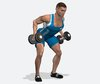
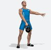
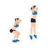
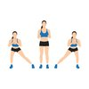
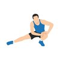

| Numero |
Esercizio |
Descrizione |
| 001 |
|
ADDOME - Plank Classico |
| 002 |
|
ADDOME - Leg lift |
| 003 |
|
ADDOME - Crunch classico |
| 004 |
|
ADDOME - Leg lift alle parallele |
| 113 |
|
ADDOME - Sec Plank |
| 093 |
|
ADDOME e GLUTEI Plank e Pull Up leg alternato |
| 005 |
|
TRICIPITI - Parallele |
| 006 |
|
TRICIPITI - French press con bilanciere |
| 007 |
|
TRICIPITI - French press con manubri |
| 008 |
|
TRICIPITI - Pull Up con bilanciere |
| 009 |
 |
TRICIPITI - Pull Up con manubri |
| 010 |
|
TRICIPITI - Lat Machine |
| 011 |
|
TRICIPITI - Piegamenti alla panca |
| 012 |
|
TRICIPITI - Manubri |
| 013 |
|
TRICIPITI - Manubrio singolo |
| 014 |
|
TRICIPITI - Manubrio singolo |
| 015 |
|
TRICIPITI - Parallele |
| 016 |
|
TRICIPITI - Piegamenti sulle braccia apertura stretta |
| 017 |
|
TRICIPITI - Pull Up con Kettelbell |
| 018 |
|
TRICIPITI - Pull Up con manubri |
| 019 |
|
SPALLE - Pull Up con manubri |
| 020 |
|
SPALLE - Alzate laterali con manubri |
| 021 |
|
SPALLE - Croci con manubri posteriori |
| 022 |
|
SPALLE - Alzate al mento con bilanciere |
| 023 |
|
SPALLE - Alzate al mento con manubri |
| 024 |
|
SPALLE - Arnold press con manubri |
| 025 |
|
SPALLE - Arnold press con manubri |
| 026 |
|
SPALLE - Alzate frontali con manubri |
| 027 |
|
SPALLE - Croci posteriori con manubri |
| 028 |
|
SPALLE - Alzata laterale alternata con manubri |
| 029 |
|
PETTORALI - Alzate dal basso con manubrio (o cavi) |
| 030 |
|
PETTORALI - Pull Over con manubrio |
| 031 |
|
PETTORALI - Pull Over |
| 032 |
 |
PETTORALI - Piegamenti sulle braccia |
| 033 |
|
PETTORALI - Croci su panca con manubri |
| 034 |
|
PETTORALI - Pull Up su panca con manubri |
| 035 |
|
GAMBE - Squat con kettelbell |
| 036 |
|
GAMBE - Sumo squat con bilanciere |
| 037 |
|
GAMBE - Piegamenti con manubri |
| 038 |
|
GAMBE - Affondi con manubri |
| 039 |
|
GAMBE - Step Up con bilanciere |
| 040 |
|
GAMBE - Sumo squat con Kettelbell |
| 041 |
|
GAMBE - Sumo squat con bilanciere |
| 042 |
|
GLUTEI e GAMBE - Piegamenti con bilanciere |
| 043 |
|
GAMBE - Piegamenti su panca |
| 044 |
 |
GAMBE - Piegamenti con manubri |
| 045 |
|
GLUTEI - Stacchi con kettelbell o manubri |
| 046 |
|
GAMBE - Squat corpo libero |
| 047 |
|
GAMBE - Stacchi con manubri |
| 048 |
|
GAMBE - Polpacci con manubrio |
| 049 |
|
GAMBE - Sumo squat con bilanciere |
| 050 |
|
GAMBE - Squat con manubrio |
| 051 |
|
GAMBE - Squat con kettelbell |
| 052 |
|
GAMBE - Sumo Squat con kettelbell |
| 053 |
|
GAMBE - Squat con bilanciere |
| 054 |
|
GAMBE - Sumo Squat rislzato con manubrio |
| 055 |
|
GAMBE - Squat con manubrio |
| 056 |
|
GAMBE - Squat con manubrio |
| 057 |
|
GAMBE - Squat con manubri |
| 058 |
|
GAMBE - Squat con manubrio |
| 059 |
|
GAMBE - Squat con manubrio |
| 060 |
|
GAMBE - Squat con manubri |
| 061 |
|
GAMBE - Squat con manubrio |
| 062 |
|
GAMBE - Squat con manubri |
| 092 |
|
GAMBE - Interno coscia con molla |
| 063 |
|
DORSO - Rematore con bilanciere |
| 064 |
|
DORSO - Rematore con manubri |
| 065 |
|
DORSO - Trazioni Sbarra presa frontale |
| 066 |
|
DORSO - Trazioni Sbarra presa frontale |
| 067 |
 |
DORSO - Rematore con manubri |
| 068 |
|
DORSO - Trazioni alle parallele |
| 069 |
|
DORSO - Trazioni alla sbarra presa stretta retro |
| 070 |
|
BICIPITI - Curl con bilanciere |
| 071 |
|
BICIPITI - Curl con manubri alternati |
| 072 |
|
BICIPITI - Curl con manubrio singolo |
| 073 |
|
BICIPITI - Curl con bilanciere presa larga |
| 074 |
|
BICIPITI - Curl con manubri |
| 075 |
|
BICIPITI - Curl manubrio singolo isolato |
| 076 |
|
BICIPITI - Curl manubri alternati panca 90° |
| 077 |
|
BICIPITI - Curl con Kettelbell presa doppia |
| 078 |
 |
BICIPITI - Curl con Kettelbell presa singola |
| 079 |
|
BICIPITI - Curl con elastici |
| 080 |
|
BICIPITI - Curl con manubri panca 45° |
| 081 |
|
Combinato: BICIPITI - DORSO curl + rematore con bilanciere |
| 082 |
|
Combinato: SPALLE - GAMBE Pull up + Squat con manubri |
| 083 |
|
Combinato: BICIPITI - TRICIPITI Con manubri |
| 084 |
|
Combinato: PALLE - GAMBE Alzate al mento + piegamenti con bilanciere |
| 085 |
|
Combinato: BICIPITI - GAMBE Curl + Piegamenti con manubri |
| 086 |
|
Combinato: SPALLE - TRICIPITI Alzate laterali + pull up manubri |
116 |
|
Combinato: SPALLE - GAMBE Alzate Laterali + squat |
| 087 |
|
Combinato: SPALLE - TRICIPITI Alzate laterali + french press manubri |
| 088 |
|
Combinato: ADDOME - PETTORALI Piegamenti + Plank |
| 089 |
 |
Combinato: SPALLE - DORSALI pull up + rematore con manubri |
| 090 |
|
Combinato: BICIPITI - GAMBE Curl + squat con bilanciere |
| 091 |
|
Combinato: SPALLE - DORSALI Alzate al mento+ rematore con bilanciere |
| 094 |
|
RISCALDAMENTO: Mountain climbers |
| 095 |
|
RISCALDAMENTO: Mountain climbers |
| 096 |
|
RISCALDAMENTO: Jumping con affondo |
| 097 |
 |
RISCALDAMENTO: Jump squat |
| 098 |
 |
RISCALDAMENTO: Side leg raise in piedi |
| 099 |
|
RISCALDAMENTO: Stretching gambe |
| 100 |
|
RISCALDAMENTO: Circonduzioni delle braccia |
| 101 |
|
RISCALDAMENTO: Marcia veloce o corsa sul posto |
| 102 |
|
RISCALDAMENTO: Marcia veloce o corsa sul posto |
| 103 |
|
RISCALDAMENTO: Circonduzioni delle anche |
| 104 |
|
RISCALDAMENTO: Saltelli leggeri |
| 105 |
|
RISCALDAMENTO: Jump squat |
| 106 |
|
RISCALDAMENTO: Jumping alto |
| 107 |
|
RISCALDAMENTO: side leg raise |
| 108 |
|
RISCALDAMENTO: Stretching |
| 109 |
 |
RISCALDAMENTO: Stretching gambe |
| 110 |
|
RISCALDAMENTO: Jumping jacks |
| 111 |
|
RISCALDAMENTO: Saltelli laterali |
| 112 |
|
RISCALDAMENTO: Marcia o camminata leggera |
| 114 |
 |
RISCALDAMENTO: Cerchi braccia e bacino |
| 115 |
|
RISCALDAMENTO:Burpees |